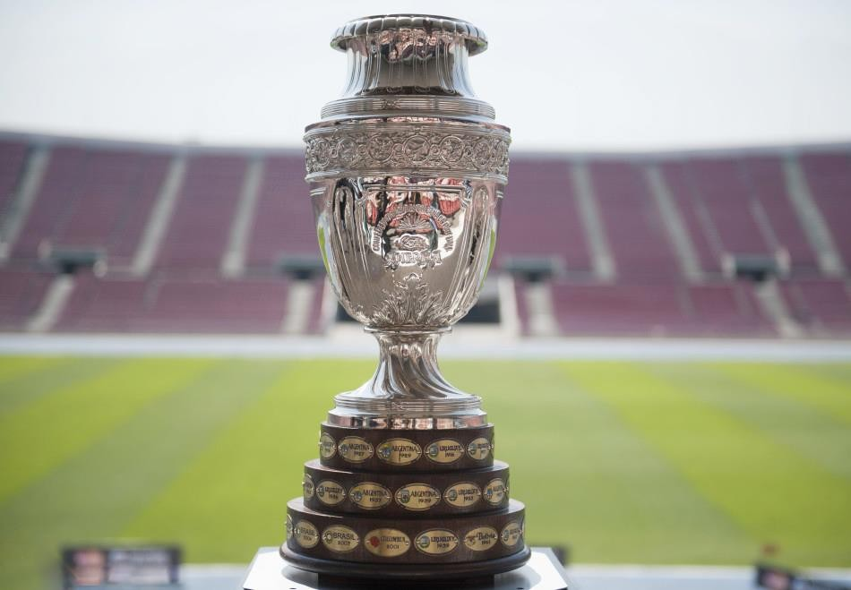
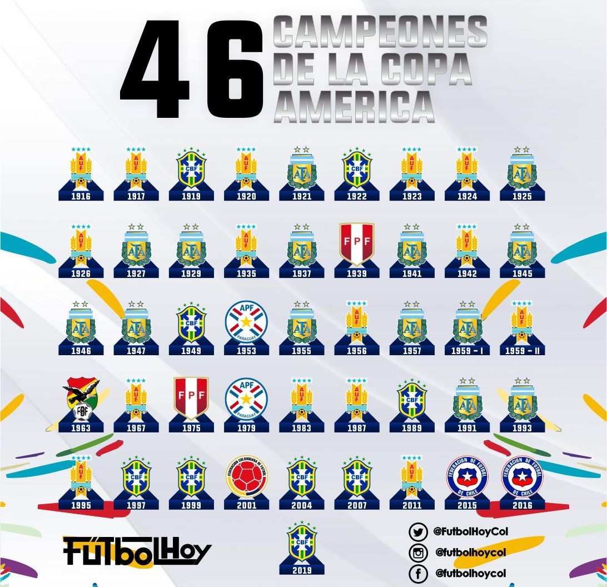

كوبا أمريكا

كأس أمريكا هي أهم مسابقة دولية لكرة القدم تنظمها CONMEBOL (مع دعوات لفرق CONCACAF أو AFC). تقام بالتناوب كل سنتين أو ثلاث أو أربع سنوات منذ الطبعة الأولى في عام 1916. منذ عام 1984 واختفاء بطولة البيت البريطاني ، كانت كوبا أمريكا أقدم بطولة قارية في تاريخ كرة القدم. حامل اللقب الحالي هو البرازيل ، الفائز في عام 2019
تاريخ
يشتمل شكل البطولة الحالي على اثني عشر منتخبًا وطنيًا يتنافسون في أماكن البلد المضيف على مدى شهر واحد تقريبًا. لا يوجد في اتحاد أمريكا الجنوبية سوى عشرة أعضاء ، لذا فإن الفرق الوطنية من اتحادات FIFA الأخرى مدعوة لملء المقعدين الشاغرين. تمت دعوة المكسيك ، وهي عضو في CONCACAF ، بانتظام منذ مشاركتها الأولى في عام 1993. ومنذ عام 1999 ، تمت دعوة فرق AFC أيضًا ، كما هو الحال بالنسبة لليابان وقطر في عام 2019. في 45 طبعة ، فازت ثمانية منتخبات وطنية باللقب. أوروجواي تتصدر عدد الانتصارات بـ 15 لقباً. الأرجنتين لديها 14 ، فازت البرازيل بتسعة ألقاب ، يليها تشيلي وباراغواي وبيرو بلقبين لكل منهما. والبطلان الآخران هما بوليفيا وكولومبيا ، ولقب واحد لكل منهما. كوبا أمريكا هي واحدة من الأحداث الرياضية العالمية الأكثر مشاهدة. كان لطبعة عام 2007 جمهور يقدر بـ 530 مليون مشاهد في أمريكا اللاتينية وجمهور عالمي تراكمي من أربعة مليارات شخص في 185 دولة. تمت دعوة حامل لقب كأس أمريكا للمشاركة في النسخة القادمة من كأس القارات 2 قبل حذفها في 2019.
